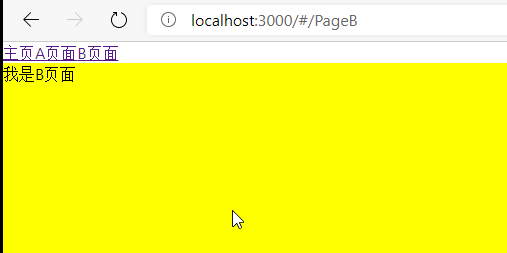

# SPA
SPA俗称单页面应用，基于整个应用只有一个页面，通过浏览器的url来进行判断该展示那些DOM元素，很大程度上增加了用户体验，所有数据都是加载好的(最近流行的代码切割除外，异步加载组件)。相比以往的多页面应用，页面与页面之间没有联系，无法保存状态，页面跳转后很难保存自身的状态，单页面应用刚好与之相反，组件与组件之间可以互相通信，融入状态管理思想，复杂的应用也可以优雅的书写代码。
# 好处
- 由于避免了页面的重新加载，SPA可以提供较为流畅的用户体验。得益于Ajax，可以实现无跳转刷新，由于与浏览器的history机制，可以使用hash的b变化从而可以实现推动界面变化。
- 基于原有的html,css,js技术体系，配合组件化开发框架和对应的router能够很好的驾驭SPA单页面应用。
- 页面切换不清空状态。
# 缺点
- 不利于SEO优化，单页面应用想做SEO需要做很多处理。
- 更加方便了爬虫，SPA单页面都是使用Ajax，通过接口调用获取数据，很大程度上降低了爬虫的难度。
# SPA原理
# Hash
# History
# 动手实现react-router
# 效果预览

本文仅实现react-router大概API和功能，仅仅用来讲解官方的React-route的实现原理，并没有实现一个一模一样的功能，在看懂本文之前，你需要有基本对react的了解，了解API---context、props.children、AMD规范
使用官方的creact-react-app进行构建
先来看看官方react-route的用法： 最外层包裹一层Router组件，用来说明基于该路由是Hash路由还是History路由，History路由打包后无法跳转，还需要后端做处理，所以一般使用hash路由，Router包裹的Route组件可接收多个参数
- path：该路由的路径
- component：该路由对应渲染的组件
- exact：是否仅匹配一个
- 更多可查看react-router文档
先使用官方的React-route搭建单页面：
安装插件:
npm i react-router-dom -s
# App.js
import React from 'react';
import {HashRouter as Router,Route} from 'react-router-dom'
class App extends React.Component{
render(){
return(
<div>
<div>
<a href="#/Home">主页</a>
<a href="#/PageA">用户</a>
<a href="#/PageB">设置</a>
</div>
<div>
<Router >
<Route path="/Home" component={Main}/>
<Route path='/PageA' component={PageA}/>
<Route path='/PageB' component={PageB}/>
</Router>
</div>
</div>
)
}
}
function Main() {//函数组件
return(<div style={{height:300,background:'#cbcbcb'}}>
我是主页
</div>)
}
function PageA() {
return(<div style={{height:300,background:'orange'}}>
我是A页面
</div>)
}
function PageB(props) {
console.log(props)//向子组件传递路由相关信息
return(<div style={{height:300,background:'yellow'}}>
我是B页面
</div>)
}
export default App;
其实就是使用React的context API让Router传递一整个window.location对象，使用children.props获取到所有的Route组件，判断Route的props内的path是否和当前的window.location符合，符合后渲染该组件，否则不渲染。 文件结构：
react-router-dom
HashRouter.js ---使用基于hash的单页面应用
Route.js ---Router内包装的Route组件
RouteContext.js ---创建context对象
index.js---组合后导出对象，方便引用
# RouteContext.js
创建路由需要传递属性的生产者和消费者
import React from 'react';
const {Provider,Consumer}= React.createContext();
export {Provider,Consumer}
# HashRouter.js
外层包裹的Router组件
import React, {Component } from 'react'
import {Consumer,Provider} from './RouteContext'//导入生产者和消费者
class HashRouter extends Component {
constructor(props) {//接收props.children,获取到Route组件
super(props);
this.state = {path:''}
}
setHashValue=()=>{//使用箭头函数避免this丢失
this.setState({
path:window.location.hash.slice(1)
})
}
componentDidMount() {
window.addEventListener('hashchange',this.setHashValue)//初始化时监听路由变化，给path赋值
}
componentWillUnmount(){
window.removeEventListener('hashchange',this.setHashValue)//组件卸载后移除监听事件
}
render() {
return (
<Provider value={window.location}> //使用context传递window.loaction属性
<Consumer> //消费者接收到属性后根据state.path渲染对应的组件
{state=>(
<React.Fragment>
{this.props.children.map((item,index)=>{//遍历childern，判断是否该渲染
return item.props.path===this.state.path?item:undefined
})}
</React.Fragment>
)}
</Consumer>
</Provider>
);
}
}
export default HashRouter;
# Route.js
传递path和component属性进行路由匹配后展示props的component属性并传递widnow.location属性，即Provider的value传递的属性(window.loaction)
import React from 'react';
import { Consumer } from "./RouteContent";
class Route extends React.Component {
constructor(props) {
super(props);
this.state = { }
}
render() {
return <Consumer>
{state=><this.props.component route={state}/>}//只负责渲染父级所传递的component并传递路由的信息
</Consumer>
}
}
export default Route;
# index.js
组装并导出对象
import BrowserRouter from "./BrowserRouter";
import HashRouter from './HashRouter';
import Link from './Link';
import Route from './Route';
export {
BrowserRouter,
HashRouter,
Link,
Route
}
接下来换成我们自己写的react-router-dom文件夹下的文件，看看效果
import React from 'react';
import {HashRouter as Router,Route} from './react-router-dom'//使用对应目录下的文件导入自己的react-router-dom
class App extends React.Component{
render(){
return(
<div>
<div>
<a href="#/Home">主页</a>
<a href="#/PageA">用户</a>
<a href="#/PageB">设置</a>
</div>
<div>
<Router >
<Route path="/Home" component={Main}/>
<Route path='/PageA' component={PageA}/>
<Route path='/PageB' component={PageB}/>
</Router>
</div>
</div>
)
}
}
function Main() {//函数组件
return(<div style={{height:300,background:'#cbcbcb'}}>
我是主页
</div>)
}
function PageA() {
return(<div style={{height:300,background:'orange'}}>
我是A页面
</div>)
}
function PageB(props) {
console.log(props)//向子组件传递路由相关信息
return(<div style={{height:300,background:'yellow'}}>
我是B页面
</div>)
}
export default App;
到此，一个简易的react-router就完成了，更多功能还需完善，像是Link，Redirect,exact和路由跳转判断等可根据喜好继续实现